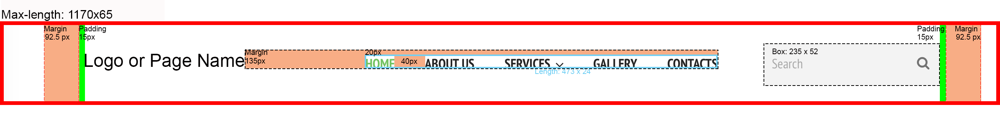
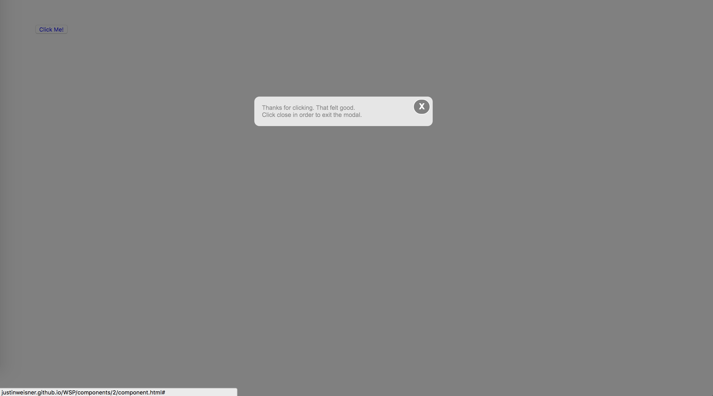
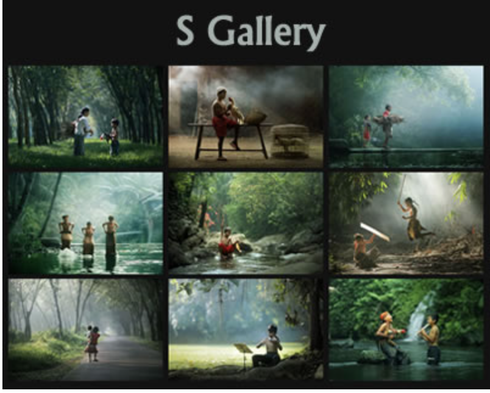
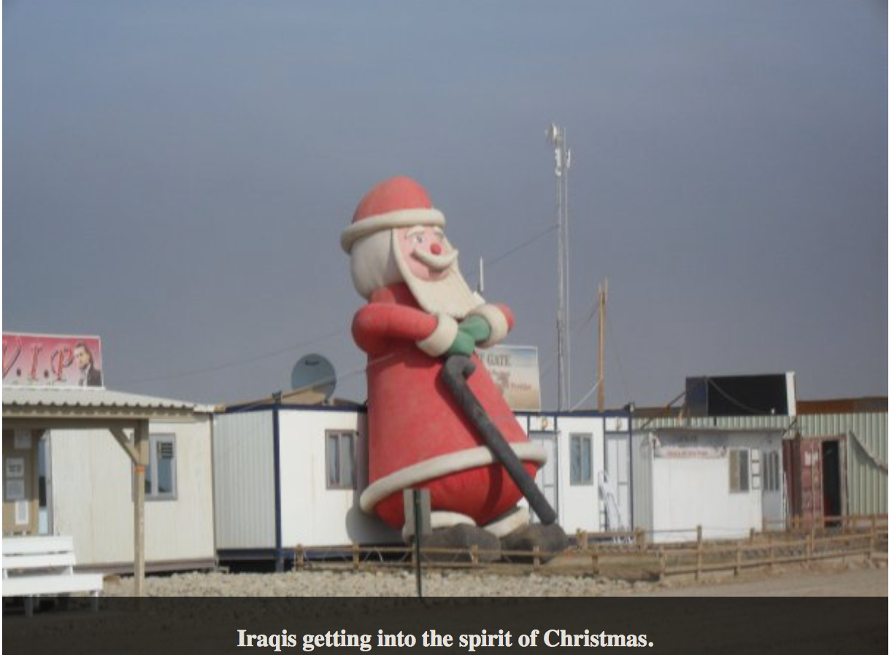
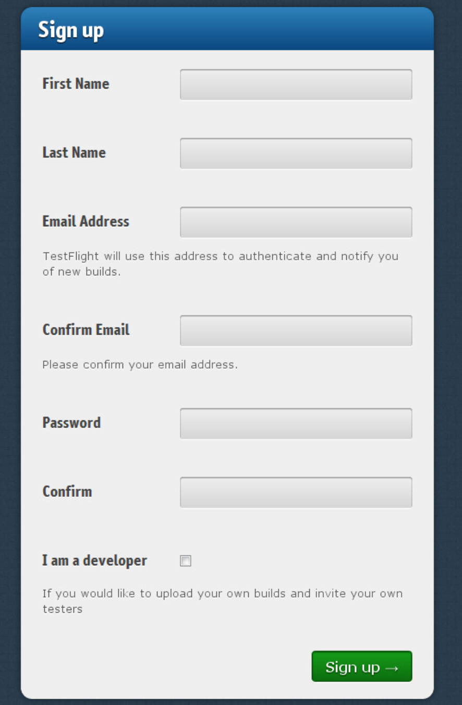

Component Library

Drop-down menu as a header or page navigation
What I hope to practice/learn?
I chose this as the feature to practice on because I have had several issues in making a drop down menu that looks simple yet stunning. My goal through practicing this component would be to have a drop down menu without having any boxes being show or have them be less noticeable.
How this relates to what I have/will learn in WDD.
This relates to what I have learned in WDD because no matter where someone goes on a webpage, there needs to be a navigation menu in order for the user to go to where they need to go.
How might I build this?
- Create the component as a
<header> or as a <nav>
- Company branding established using
<img> or <h1>
- Navigation
<nav> containing a <ul> with four <li>, each containing an <a>
- Dropdown menu items will be nested
<ul> inside of corresponding <li>
Style Guide
- Colors:
- Fonts:

Pop Up Modal
What I want to practice/learn?
Last month, I started learning about modals using jquery and it was a good attempt for a first try but it is something I would like to practice more with because I believe I will be using this component a lot as a developer and I want to make sure I get it done right. It will also help me practice my javascript which is something I am still struggling with.
How this relates to what I have/will learn in WDD.
The pop up modal certainly has it's place on a page no matter what the use for it is. It can help in enlarging certain photos, bring up a login or a sign up form, or even showcasing something interesting that is related to the page.
How might I build this?
- Create the component as a
<section> tag.
- Dim the main page using CSS, putting the modal on top of the page
- Use a
<span> tag to create the close button "X"
- Insert text, form or image into the modal

Responsive Images with Borders
What I want to practice/learn?
When I first started learning about responsive web design, I had managed to get the text to move along with the page, however the images didn't move that well and spilled out of their new container when they got to a certain breakpoint. Time to practice getting images to be shrink with the page.
How this relates to what I have/will learn in WDD.
With the internet not just being exclusive to personal computers anymore thanks to the invention of the smartphone and tablet, it has become increasingly clear to work on pages that will not only look good on a pc, but also on mobile devices.
How might I build this?
- Create a
<section> title using <h1> or <h2>
- Make an
<ul> or use 6 <img> tags.
- Line images in 2 rows of three using CSS.
- Add break points into the CSS for desktop, tablet and mobile phone.

Adding a caption when hovering over a photo
What I hope to practice/learn?
Most pages today have images where if you hover over them, they will either just dim to give it a cool effect of interactivity or you can add icons for people's social media accounts. For me, I always wondered why I have to always click on images in order for me to know what the image caption says. It would be nice to just be able to hover over the image and not have to be opening new tabs in order to get the caption.
How this relates to what I have/will learn in WDD.
This will relate as it helps me to learn how to save space when it comes to images. I am using this as the first step in order to learn how to build upon the hover effect and what I can do with it.
How might I build this?

Using Local Storage to Store Data from a Sign Up form
What I want to practice/learn?
This item was apart of my assignment last month but the professor didn't touch on it at all and so trying to understand local storage in the context of a to do list was a challenge which I didn't even bother to do. After the assignment was done, she sent along an example of how to do the local storage so I think this would be a very good practice component.
How this relates to what I have/will learn in WDD.
With local storage, it will certainly help in the aspect of making web browsing a lot easier for the user because their computer/tablet/phone will be able to keep their data on the local storage so that they can just return to the page without needing to either sign back in or erase things like a list.
How might I build this?